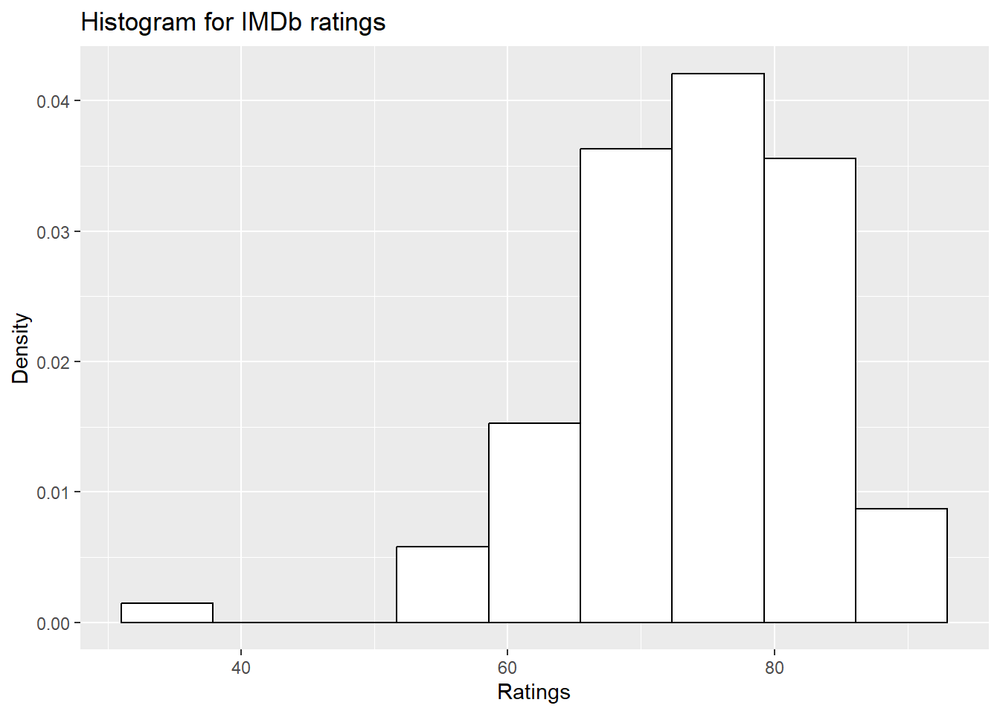
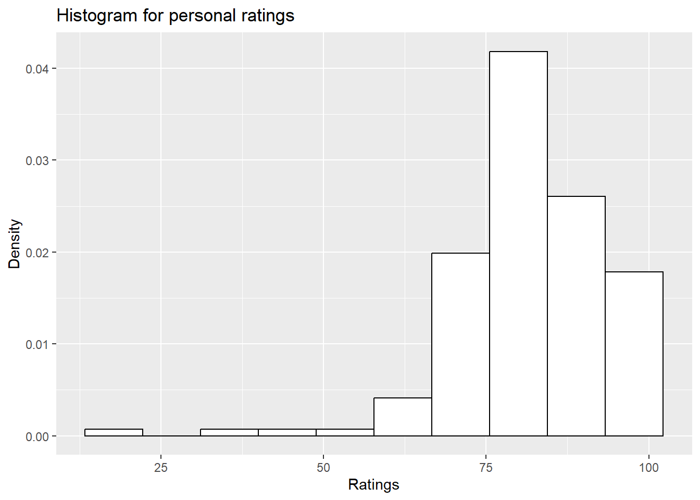
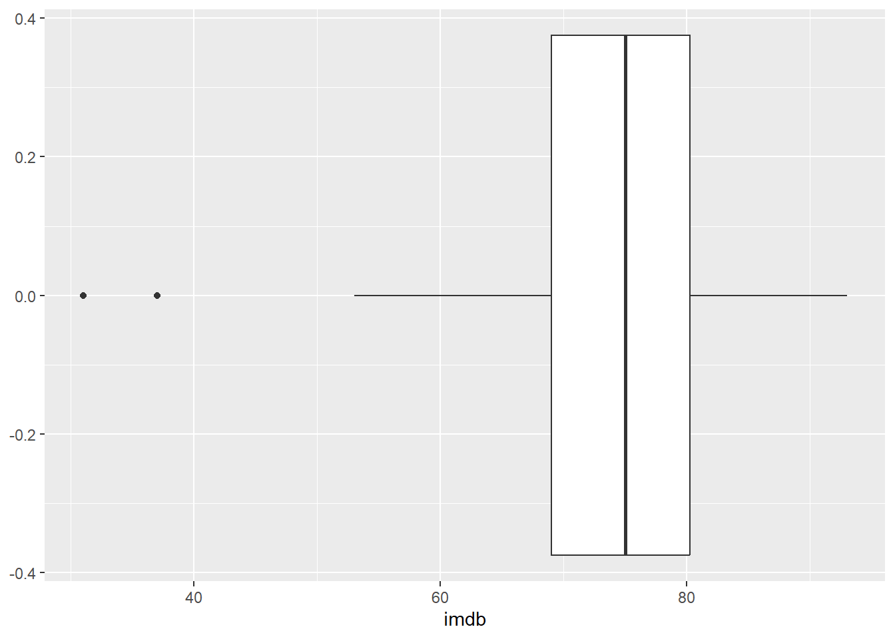
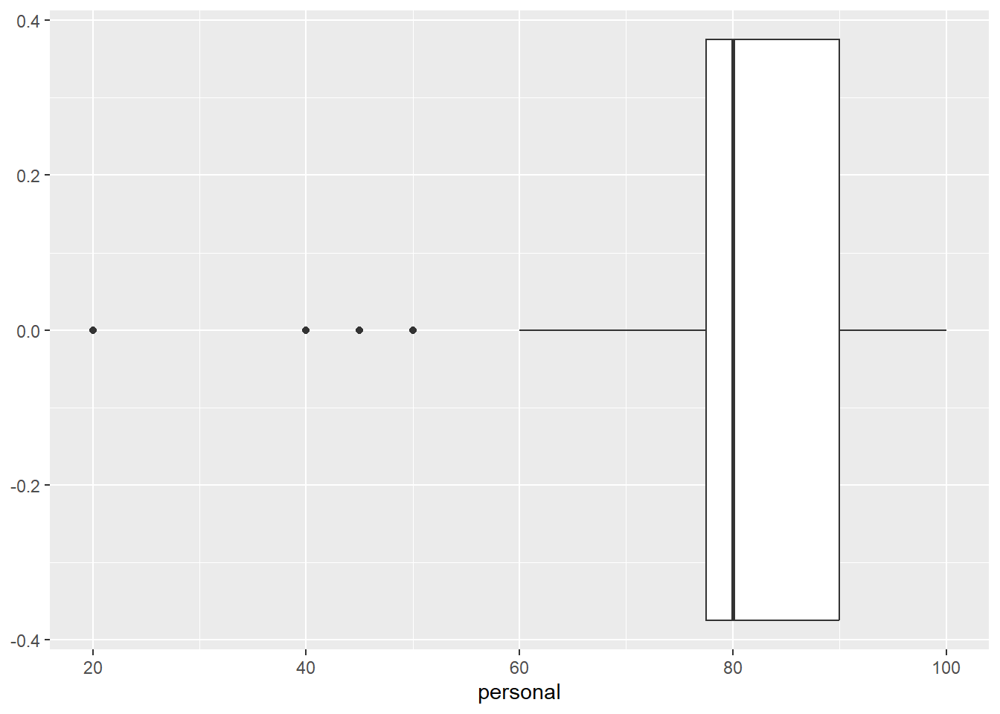

# Type your code hereActivity 3: Basic Statistics in R
Introduction
In this activity you will practice basic statistics. You will explore your movie data set. Remember that we will call the file that contains your data a data set, and when the data is loaded into a data structure in R will be called data frame.
Throughout the document you will find R-chunks like this one
Remove the comment and substitute it for the necessary code.
Also, after some R-chunks there will be questions like this one:
- What is the output of some instruction? ____
Type the correct answer in the indicated space. If you want your answer underlined, select your answer and choose “underline” from the “Format” drop down menu above the editor.
Libraries and Data
You will begin by loading the libraries you will use. The summarytools library is used for getting a full statistical description of your data frame, while tidyverse is used for all the statistical analysis, including graphs.
library(summarytools)
library(tidyverse)
library(ggplot2)Now, you load your data set into the variable movies. Remember to have your data set in the same folder as this Quarto document.
movies <- read.csv("Team1_movies_dataset.csv")Exploring the dataset
You can explore the contents of the data frame just by typing in its name. However, since the data set contains around 200 observations, we can get a glipse of the information by displaying only the first 6 observations with the function head().
head(movies) Movie Year Runtime..minutes. Genre
1 The Godfather (1972) 1972 175 Gangster
2 The Godfather Part II (1974) 1974 202 Gangster
3 The Dark Knight (2008) 2008 152 Superhero
4 Pulp Fiction (1994) 1994 154 Gangster
5 The Shawshank Redemption (1994) 1994 142 Drama
6 Fight Club (1999) 1999 139 Crime
Budget..Millions.USD. Revenue..Millions.USD. IMDb Metacritic Rotten.Tomatoes
1 6 250 92 90 97
2 13 93 90 88 96
3 185 1000 91 89 94
4 8 213 88 86 92
5 25 28 93 91 89
6 68 101 88 86 81
Filmaffinnity Personal Person.1 Person.2 Person.3 Person.4 Person.5 Person.6
1 90 96 NA NA 95 NA NA 95
2 90 94 NA NA 95 NA NA 100
3 86 100 94 NA 90 NA 97 100
4 87 84 NA NA 90 NA 94 NA
5 87 84 NA NA 100 NA NA 85
6 87 87 82 NA 95 NA 95 90
Person.7 Person.8 Person.9 Person.10 Person.11 Person.12 Person.13 Person.14
1 90 NA 96 90 90 NA NA NA
2 NA NA 94 70 95 NA NA NA
3 70 40 100 95 100 NA 100 NA
4 NA 80 84 85 90 NA NA NA
5 NA 80 100 NA 100 NA NA NA
6 95 95 87 90 85 50 80 NA
Person.15 Person.16 Person.17 Person.18 Person.19 Person.20
1 NA NA NA 90 95 NA
2 NA NA NA 88 80 100
3 80 NA NA 99 100 70
4 NA NA NA 80 NA 85
5 NA NA NA 99 NA 80
6 80 NA NA 80 80 95The function dim() will give you the number of rows and columns of the data frame. The first entry is the number of rows (observations), and the second entry is the number of columns (attributes).
dim(movies)[1] 200 31How many observations are there in your data frame? 200
How many attributes each observation has? 31
Extracting variables of interest
Next, you will create two variables, imdb and personal, containing the rating given by the Internet Movie Database and your personal rating for the movies in your data frame. First, we use the function names() to extract the name of all the attributes in the data frame.
names(movies) [1] "Movie" "Year" "Runtime..minutes."
[4] "Genre" "Budget..Millions.USD." "Revenue..Millions.USD."
[7] "IMDb" "Metacritic" "Rotten.Tomatoes"
[10] "Filmaffinnity" "Personal" "Person.1"
[13] "Person.2" "Person.3" "Person.4"
[16] "Person.5" "Person.6" "Person.7"
[19] "Person.8" "Person.9" "Person.10"
[22] "Person.11" "Person.12" "Person.13"
[25] "Person.14" "Person.15" "Person.16"
[28] "Person.17" "Person.18" "Person.19"
[31] "Person.20" If the column for IMDb ratings is called IMDB, you can extract such column with movies$IMDB.
imdb <- movies$IMDb
personal <- movies$PersonalDescriptive statistics
Minimum and maximum
Minimum and maximum can be found thanks to the min() and max() functions, or with range(). Note that if there is missing data (NA), you must include the option na.rm = TRUE.
IMDb ratings
range(imdb, na.rm = TRUE)[1] 31 93What is the minimum IMDb rating? 31
What is the maximum IMDb rating? 93
Personal ratings
range(personal, na.rm = TRUE)[1] 20 100What is the minimum personal rating? 20
What is the maximum personal rating? 100
Measures of central tendency
Mean
The mean can be computed with the mean() function
mean(imdb, na.rm = TRUE)[1] 74.05mean(personal, na.rm = TRUE)[1] 81.45732What is the average IMDb rating? 74.05
What is your average personal rating? 81.45732
Tips:
- If there is at least one missing value in your dataset, use
mean(data, na.rm = TRUE)to compute the mean with the NA excluded. This argument can be used for many other functions, not only the mean.
Median
The median can be computed thanks to the median() function:
median(imdb, na.rm = TRUE)[1] 75median(personal, na.rm = TRUE)[1] 80What is the median of IMDb ratings? 75
What is the median of your personal ratings? 80
Measures of variation
Range
The range of the data can be easily computed by subtracting the minimum from the maximum
max(imdb, na.rm = TRUE) - min(imdb, na.rm = TRUE)[1] 62max(personal, na.rm = TRUE) - min(personal, na.rm = TRUE)[1] 80What is the range of IMDb ratings? 62
What is the range of your personal ratings? 80
Interquartile range
The interquartile range (i.e., the difference between the first and third quartiles) can be computed with the IQR() function
IQR(imdb, na.rm = TRUE)[1] 11.25IQR(personal, na.rm = TRUE)[1] 12.5What is the interquartile range of IMDb ratings? 11.25
What is the interquartile range of your personal ratings? 12.5
Standard deviation and variance
The standard deviation and the variance are computed with the sd() and var() functions, respectively. These functions correspond to the sample standard deviation and variance, since R assumes that the data corresponds to a sample of the population.
var(imdb, na.rm = TRUE)[1] 85.64573var(personal, na.rm = TRUE)[1] 138.1147sd(imdb, na.rm = TRUE)[1] 9.254498sd(personal, na.rm = TRUE)[1] 11.75222What is the variance of IMDb ratings? 85.64573
What is the variance of your personal ratings? 138.1147
What is the standard deviation of IMDb ratings? 9.254498
What is the standard deviation of your personal ratings? 11.75222
Descriptive statistics of several variables at a time
We can use descr() to display all relevant statistics of all numerical values in the dataset. Use it in your data frame.
descr(imdb)Descriptive Statistics
imdb
N: 200
imdb
----------------- --------
Mean 74.05
Std.Dev 9.25
Min 31.00
Q1 69.00
Median 75.00
Q3 80.50
Max 93.00
MAD 8.90
IQR 11.25
CV 0.12
Skewness -0.88
SE.Skewness 0.17
Kurtosis 2.22
N.Valid 200.00
N 200.00
Pct.Valid 100.00descr(personal)Descriptive Statistics
personal
N: 200
personal
----------------- ----------
Mean 81.46
Std.Dev 11.75
Min 20.00
Q1 77.00
Median 80.00
Q3 90.00
Max 100.00
MAD 13.34
IQR 12.50
CV 0.14
Skewness -1.30
SE.Skewness 0.19
Kurtosis 4.42
N.Valid 164.00
N 200.00
Pct.Valid 82.00Look at the row labeled with Skewness, and answer the following questions.
Is the variable
imdbskewed to the left or to the right? leftIs the variable
personalskewed to the left or to the right? left
Graphical analysis
Now that you have a numerical description of your data frame, you can proceed to visualize this information. You are asked to draw a histogram and a boxplot for both variables, imdb and personal. Use the grammar of graphics from the ggplot2 library for this, using piped data. Remember to include a proper title for your graphs, as well as labels for the x and y axis. You are at liberty to choose any color scheme, as long as it does not get in the way of conveying the needed information.
Histogram
A histogram gives an idea about the distribution of a quantitative variable. The idea is to break the range of values into intervals and count how many observations fall into each interval. Histograms are a bit similar to barplots, but histograms are used for quantitative variables whereas barplots are used for qualitative variables.
# Type the code for drawing a histogram for IMDb ratings with 10 bins here
chart_imdb <- ggplot(movies, aes(x = imdb))
chart_imdb +
geom_histogram(aes(y=after_stat(density)),bins = 10,color = 1, fill = "white") +
#geom_density(alpha = 0.25,lwd = 1, colour = "4",
# fill = "blue") +
labs(title = "Histogram for IMDb ratings",
x = "Ratings",
y = "Density")
- Does the skewness of the histogram agree with the skewness parameter given in the description of the data above? Yes
# Type the code for drawing a histogram for your personal ratings with 10 bins here
chart_personal <- ggplot(movies, aes(x = personal))
chart_personal +
geom_histogram(aes(y=after_stat(density)),bins = 10,color = 1, fill = "white") +
#geom_density(alpha = 0.25,lwd = 1, colour = "4",
# fill = "blue") +
labs(title = "Histogram for personal ratings",
x = "Ratings",
y = "Density")Warning: Removed 36 rows containing non-finite outside the scale range
(`stat_bin()`).
- Does the skewness of the histogram agree with the skewness parameter given in the description of the data above? Yes
Boxplots
Boxplots are really useful in descriptive statistics and are often underused (mostly because it is not well understood by the public). A boxplot graphically represents the distribution of a quantitative variable by visually displaying five common location summary (minimum, median, first/third quartiles and maximum) and any observation that was classified as a suspected outlier using the interquartile range (IQR) criterion.
The IQR criterion means that all observations above \(q_{0.75}+1.5\cdot IQR\) or below \(q_{0.25}-1.5\cdot IQR\) (where \(q_{0.25}\) and \(q_{0.75}\) correspond to first and third quartile respectively) are considered as potential outliers by R. The minimum and maximum in the boxplot are represented without these suspected outliers.
Seeing all these information on the same plot help to have a good first overview of the dispersion and the location of the data.
# Type the code for drawing a boxplot for IMDb ratings
movies |>
ggplot(aes(x=imdb)) +
geom_boxplot()
- Are there any outliers for this variable? Yes, there are 2
# Type the code for drawing a boxplot for your personal ratings
movies |>
ggplot(aes(x=personal)) +
geom_boxplot()Warning: Removed 36 rows containing non-finite outside the scale range
(`stat_boxplot()`).
- Are there any outliers for this variable? Yes, there are 4
Submission
Render your document and verify that the output of all chunks is correct and all questions have been answered.
Upload this document, the
htmlrendered document, and your dataset to Canvas.The name of your files should have the format
AXXXXXXXX_movies_description.qmdfor your Quarto documentAXXXXXXXX_movies_description.htmlfor your html rendered documentTeamX_movies_dataset.csvfor your data set